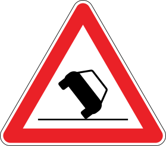

You've Been Down This Road Before
And somebody sold you a detour.
A template website that looks like nine hundred others. Stock
photos posted to your page for a monthly fee. You saw nothing come back and
figured this stuff doesn't work for businesses like yours. It works. It just
has to be built from your business, not pulled off a shelf.